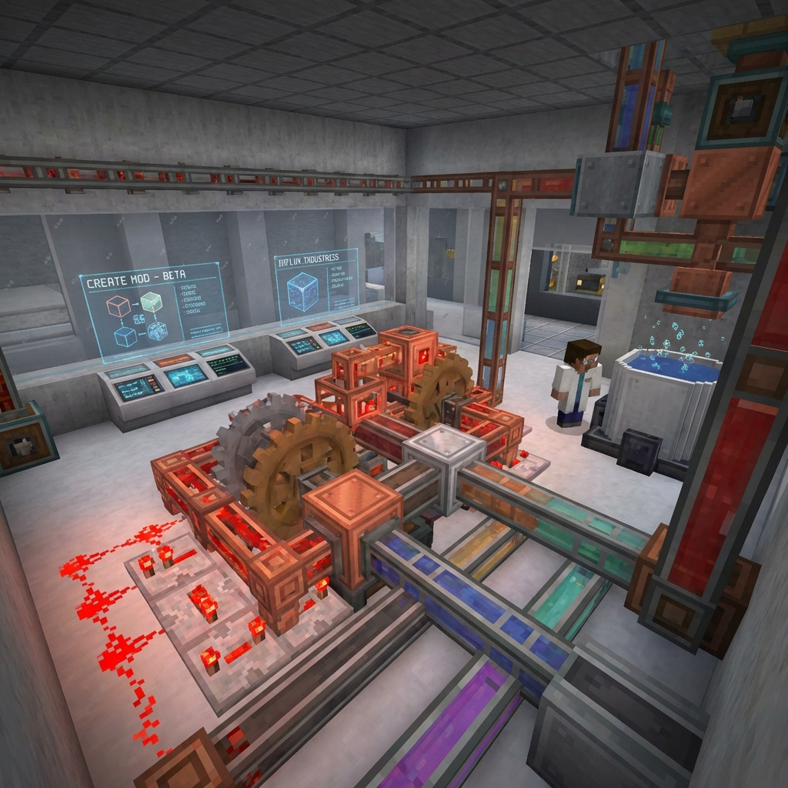

Create: Industrialization
Technical Mod Expansion

Overview
An expansion for the popular "Create" mod, Industrialization introduces mid-to-late game automation tools focused on chemical processing, energy distribution, and logistics management. It maintains the "cog-and-belt" aesthetic while providing complex technical challenges.